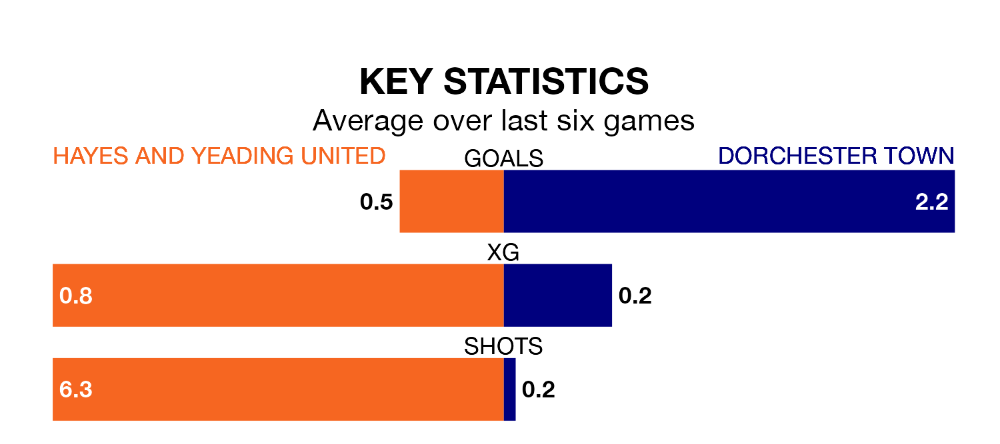

Dorchester Town face Hayes and Yeading United on Saturday seeking to protect their long unbeaten run in the Southern League Premier South.
Dorchester are unbeaten in six, with four wins and two draws, ahead of the 3pm kick-off.
They face a Hayes & Yeading team who have drawn three and lost three over the same number of games.
In the last 10 years, Hayes & Yeading and Dorchester have played each other on eight occasions. Hayes & Yeading won five of them, Dorchester two, and they drew once.
On average, Hayes & Yeading scored 2.0 goals and Dorchester 0.8 in those matches.
Their last meeting was on October 28, when they played out a 1-1 draw.
Hayes & Yeading are 18th in the table after 36 games, of which they have won nine and drawn 12, earning 39 points.
Dorchester are four places ahead of United in 14th, with 12 wins and eight draws putting them on 44 points.
With 52 goals in 36 games so far this season, the hosts are scoring at below the league average rate with 1.4 goals per game. But they are conceding fewer than average too, letting in 57 goals at a rate of 1.6 per game.
Town are also below average scorers, with 1.5 goals per game, compared to a league average of 1.7. They have conceded 1.9 goals per game.
Hayes & Yeading's last match was on Monday, a 0-0 draw against Hendon.
Dorchester beat Tiverton Town 2-1 last time out, also on Monday.
Updated: 16:41 (UTC), 04/04/24